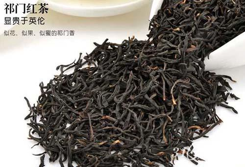

名茶真假鉴别
1、西湖龙井产于浙江杭州西湖区，茶叶为扁形，叶细嫩，条形整齐，宽度一致，为绿黄色，手感光滑，一芽一叶或二叶；芽长于叶，一般长3厘米以下，芽叶均匀成朵，不带夹蒂、碎片，小巧玲珑，龙井茶味道清香，假冒龙井茶则多是清草味，夹蒂较多，手感不光滑。
2、碧螺春产生江苏吴县太湖的洞庭山碧螺峰。银芽显露，一芽一叶，茶叶总长度为1.5厘米，牙为白毫卷曲形，叶为卷曲清绿色，叶底幼嫩，均匀明亮。假的为一芽二叶，芽叶长度不齐，呈黄色。
3、信阳毛尖产于河南信阳车云山。其外形条索紧细、圆、光、直，清黑色，一般一芽一叶或一芽二叶，假的为卷曲形，叶片发黄。

4、君山银针产于湖南岳阳君山。由未展开的肥嫩芽头制成，芽头肥壮挺直、匀齐，满披茸毛，色泽金黄光亮，香气清鲜，茶色浅黄，味甜爽，冲泡看起来芽尖冲向水面，悬空竖立，然后徐徐下沉杯底，形如群笋出土，又像银刀直立。假银针为清草味，泡后银针不能竖立。
5、六安瓜片产于安徽六安和金寨两县的齐云山。其外形平展，每一片不带芽和茎梗，叶呈绿色光润，微向上重迭，形似瓜子，内质香气清高，水色碧绿，滋味回甜，叶底厚实明亮。假的则味道较苦，色比较黄。
6、黄山毛峰产于安徽歙县黄山。其外形细嫩稍卷曲，芽肥壮、匀齐，有锋毫，形状有点像“雀舌”，叶呈金黄色；色泽嫩绿油润，香气清鲜，水色清澈、杏黄、明亮，味醇厚、回甘，叶底芽叶成朵，厚实鲜艳。假茶呈土黄，味苦，叶底不成朵。
7、祁门红茶产于安徽祁门县。茶颜色为棕红色，切成0.6―0.8厘米，味道浓厚，强烈醇和、鲜爽。假茶一般带有人工色素，味苦涩、淡薄，条叶形状不齐。

8、都匀毛尖产于贵州都匀县。茶叶嫩绿匀齐，细小短薄，一芽一叶初展，形似雀舌，长2―2.5厘米，外形条索紧细、卷曲，毫毛显露。叶底嫩绿匀齐。假茶叶底不匀，味苦。
9、铁观音产于福建安溪县。叶体沉重如铁，形美如观音，多呈螺旋形，色泽砂绿，光润，绿蒂，具有天然兰花香，汤色清澈金黄，味醇厚甜美，入口微苦，立即转甜，耐冲泡，叶底开展，青绿红边，肥厚明亮，每颗茶都带茶枝，假茶叶形长而薄，条索较粗，无青翠红边，叶泡三遍后便无香味。

10、武夷岩茶产于福建崇安县。外形条索肥壮、紧结、匀整，带扭曲条形，俗称“蜻蜓头”，叶背起蛙皮状砂粒，俗称蛤蟆背，滋味醇厚回苦，润滑爽口，汤色橙黄，清澈艳丽，叶底匀亮，边缘朱红或起红点，中央叶肉黄绿色，叶脉浅黄色，耐泡在6―8次以上，假茶开始味淡，欠韵味，色泽枯暗。